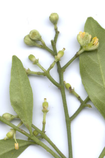
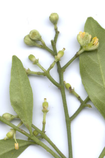
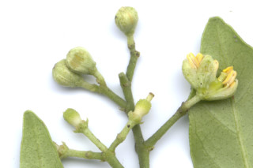
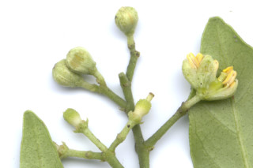

Small trees up to 5 m tall.
5 ಮೀ. ಎತ್ತರದವರೆಗಿನ ಸಣ್ಣಗಾತ್ರದ ಮರಗಳು.
Small trees up to 5 m tall.
சிறிய மரம் 5 மீ. உயரம் வரை வளரக்கூடியது.
Young branchlets terete, grey pubescent.
ಎಳೆಯ ಕಿರುಕೊಂಬೆಗಳು ದುಂಡಾಗಿರುತ್ತವೆ ಮತ್ತು ಬೂದು ಬಣ್ಣದ ಮೃದುತುಪ್ಪಳದಿಂದ ಕೂಡಿರುತ್ತವೆ.
Young branchlets terete, grey pubescent.
சிறியநுனிக்கிளைகள் குறுக்குவெட்டுத் தோற்றத்தில் வளையமானது, சாம்பல் நிறமானது உரோமங்களுடையது.
Leaves compound, imparipinnate, alternate, spiral; rachis terete, glabrous; petiolule up to 0.5 cm long; leaflets 5-11, 7-13.5 x 3-4.2 cm, elliptic-rhomboid with unequal sides, apex gradually acute to acuminate, base asymmetric and attenuate, margin crenulate to subentire, glandular punctate, glabrous; midrib raised above; secondary_nerves 7-9 pairs; tertiary_nerves broadly reticulate.
ಎಲೆಗಳು ಸಂಯುಕ್ತ, ಅಸಮ ಸಂಖ್ಯೆ ಏಕಗರಿ ರೂಪಿ ಮಾದರಿಯಲ್ಲಿದ್ದು, ಪರ್ಯಾಯ ಮತ್ತು ಸುತ್ತು ಜೋಡನಾ ವ್ಯವಸ್ಥೆಯಲ್ಲಿರುತ್ತವೆ;ಅಕ್ಷದಿಂಡು ದುಂಡಾಗಿದ್ದು ರೋಮರಹಿತವಾಗಿರುತ್ತವೆ;ಉಪತೊಟ್ಟುಗಳು 0.5 ಸೆಂ.ಮೀ ವರೆಗಿನ ಉದ್ದ ಹೊಂದಿರುತ್ತವೆ;ಕಿರುಪತ್ರಗಳು 5 ರಿಂದ 11 ಇದ್ದು, 7.5-13.5 X 3 – 4.2 ಸೆಂ.ಮೀ. ಗಾತ್ರ ಹೊಂದಿದ್ದು,ಅಂಡವೃತ್ತ- ವಜ್ರಾಕೃತಿಯ ಆಕಾರದಲ್ಲಿದ್ದು ಅಸಮವಾದ ಪಾರ್ಶ್ವಗಳನ್ನು ಹೊಂದಿರುತ್ತವೆ,ತುದಿ ಬರಬರುತ್ತಾ ಚೂಪಾಗುವ ಮಾದರಿಯಿಂದ ಕ್ರಮೇಣ ಚೂಪಾಗುವವರೆಗಿನ ರೀತಿಯಲ್ಲಿರುತ್ತದೆ, ಬುಡ ಅಸಮಪಾರ್ಶ್ವತೆ ಮತ್ತು ಒಳಬಾಗಿದ ಮಾದರಿಯಲ್ಲಿರುತ್ತದೆ, ಅಂಚು ಸೂಕ್ಷ್ಮ ದುಂಡೇಣಿನ ದಂತಗಳ ಮಾದರಿಯಿಂದ ಉಪ – ನಯವಾದ ವರೆಗಿನ ರೀತಿಯಲ್ಲಿರುತ್ತದೆ, ಮಚ್ಚೆ ರೀತಿಯ ರಸಗ್ರಂಥಿಗಳ ಸಮೇತವಿದ್ದು, ರೋಮರಹಿತವಾಗಿರುತ್ತವೆ;ಮಧ್ಯನಾಳ ಪತ್ರದ ಮೇಲ್ಭಾಗದಲ್ಲಿ ಉಬ್ಬಿರುತ್ತವೆ; ಎರಡನೇ ದರ್ಜೆಯ ನಾಳಗಳು 7-9 ಜೋಡಿಗಳಿರುತ್ತವೆ ;ಮೂರನೇ ದರ್ಜೆಯ ನಾಳಗಳು ವಿಶಾಲ ಜಾಲಬಂಧ ನಾಳ ವಿನ್ಯಾಸದಲ್ಲಿರುತ್ತವೆ.
Leaves compound, imparipinnate, alternate, spiral; rachis terete, glabrous; petiolule up to 0.5 cm long; leaflets 5-11, 7-13.5 x 3-4.2 cm, elliptic-rhomboid with unequal sides, apex gradually acute to acuminate, base asymmetric and attenuate, margin crenulate to subentire, glandular punctate, glabrous; midrib raised above; secondary_nerves 7-9 pairs; tertiary_nerves broadly reticulate.
இலைகள் கூட்டிலை, ஒற்றைபடை சிறகு வடிவக்கூட்டிலைகள், மாற்றுஅடுக்கமானவை, சுழல் போன்று அமைந்தவை; மத்தியகாம்பு (ராக்கிஸ்) குறுக்குவெட்டுத் தோற்றத்தில் வளையமானது, உரோமங்களற்றது; சிற்றிலைக்காம்பு 0.5 செ.மீ. நீளமானது; சிற்றிலை 5-11, 7-13.5 X 3-4.2 செ.மீ., நீள்வட்டம்-சாய்சதுரம் வடிவானது மற்றும் அலகின் இரு பக்கங்களும் சமமற்றது, அலகின் நுனி சீராக கூரியது முதல் அதிக்கூரியது, அலகின் தளம் சமமற்றது மற்றும் அட்டனுவேட், அலகின் விளிம்பு சிறிய பிறை போன்ற பற்களுடையது முதல் கிட்டதட்ட முழுமையானது, ஒளிபுகும் சுரப்பி புள்ளிகளுடையது, உரோமங்களற்றது; மையநரம்பு மேற்புறத்தில் அலகின் பரப்பைவிட உயர்ந்து இருக்கும்; இரண்டாம் நிலை நரம்புகள் 7-9 ஜோடிகள்; மூன்றாம் நிலை நரம்புகள் அகன்ற வலைப்பின்னல் போன்றவை.
Inflorescence terminal thyrsoid panicles; flowers white, pentamerous.
ಪುಷ್ಪಮಂಜರಿಗಳು ತುದಿಯಲ್ಲಿನ ಸಂಕುಚಿತ ಅಥವಾ ಅಂಡಾಕಾರದ ಪುನರಾವೃತ್ತಿಯಾಗಿ ಕವಲೊಡೆಯುವ ಮಧ್ಯಾರಂಭಿ ಮಾದರಿಯವು;ಹೂಗಳು ಬಿಳಿ ಬಣ್ಣದವು ಮತ್ತು ಹೂಗಳ ಭಾಗಗಳು 5 ಸಂಖ್ಯೆಯ ಗುಣಕದಲ್ಲಿರುತ್ತವೆ.
Inflorescence terminal thyrsoid panicles; flowers white, pentamerous.
மஞ்சரி தண்டின் நுனியில் காணப்படும் தைரசாய்டு பேனிக்கிள் வகை மஞ்சரி; மலர்கள் வெள்ளை நிறமானது, மலர்களின் பாகங்கள் ஐந்தின் மடங்கானது.
Berry, globose; seeds oblong.
ಬೆರ್ರಿಗಳು ಗೋಳಾಕಾರದಲ್ಲಿರುತ್ತವೆ;ಬೀಜಗಳು ಚತುರಸ್ರದ ಆಕಾರ ಹೊಂದಿರುತ್ತವೆ.
Berry, globose; seeds oblong.
முழுச்சதைகனி (பெர்ரி), கோள வடிவமானது; விதைகள் நீள்சதுர வடிவானது.
 

 
